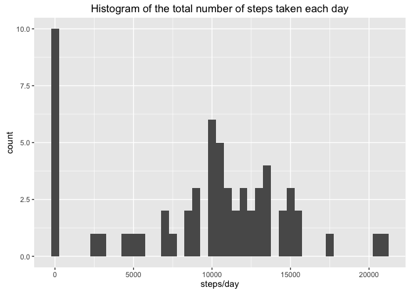
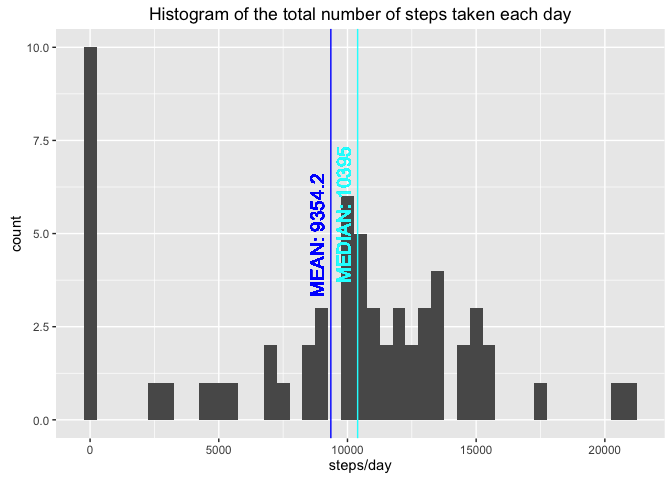
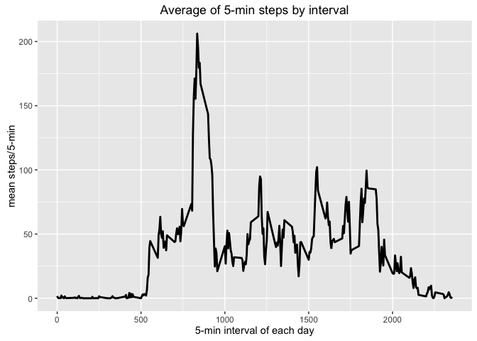
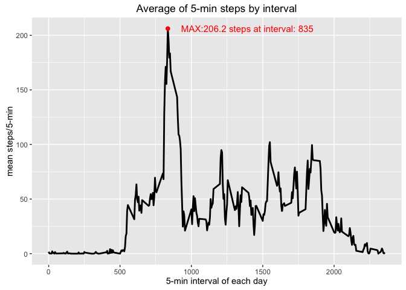
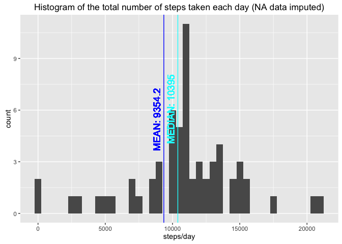
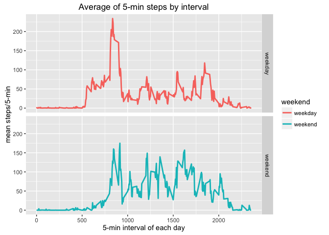

This assignment makes use of data from a personal activity monitoring device.
This device collects data at 5 minute intervals through out the day.
The data consists of two months of data from an anonymous individual collected during the months of October and November, 2012 and include the number of steps taken in 5 minute intervals each day.
you will find these files:
The data are originally downloaded from: https://d396qusza40orc.cloudfront.net/repdata%2Fdata%2Factivity.zip
But you can get the file inside the repository, file: activity.csv
Here are the main libraries used.
library(ggplot2)## Warning: package 'ggplot2' was built under R version 3.2.4library(plyr)
library(reshape2)Also it will be necesary to install “impute” library, bacause we need the “impute.knn” function, this is for the k-nearest-neighbors imputation of missing data process. For installing try:
# source("https://bioconductor.org/biocLite.R") # try http:// if https:// URLs are not supported
# biocLite("impute")
library(impute)use:
setwd("<<your working directory>>")Here we will read the data and introduce new columns for classify weekdays and weekend days.
# Reading data
DATA <- read.csv("activity.csv")
# converting to data class
DATA$date <- as.Date(strptime(DATA$date,"%Y-%m-%d"))
# introducing weekdays
DATA$day <- format(DATA$date, "%u") # Weekday as a decimal number (1–7, Monday is 1)
DATA$day2 <- as.factor(weekdays(DATA$date, abbreviate=TRUE))
DATA$weekend <- 0
DATA$weekend[DATA$day == 6 | DATA$day == 7] <- 1
DATA$weekend <- factor(DATA$weekend, levels=c(0,1), labels=c("weekday","weekend"))The variables included in this dataset are:
The dataset is stored in a comma-separated-value (CSV) file and there are a total of 17,568 observations in this dataset.
Here there are a example of the data including new columns (day, day and weekend):
head(DATA)## steps date interval day day2 weekend
## 1 NA 2012-10-01 0 1 lun weekday
## 2 NA 2012-10-01 5 1 lun weekday
## 3 NA 2012-10-01 10 1 lun weekday
## 4 NA 2012-10-01 15 1 lun weekday
## 5 NA 2012-10-01 20 1 lun weekday
## 6 NA 2012-10-01 25 1 lun weekdayFor the histogram of steps/day we sum the steps for each day usign ddply function
DATA.sum.day <- ddply(DATA, .(date), summarize, steps = sum(steps, na.rm=TRUE)) # DATA statistics by day
ggp1 <- ggplot(data=DATA.sum.day, aes(steps)) + geom_histogram(binwidth=500)
ggp1 <- ggp1 + xlab("steps/day")
ggp1 <- ggp1 + labs(title = "Histogram of the total number of steps taken each day")
plot(ggp1)
Introducing the mean and median to the previous plot
MEAN <- mean(DATA.sum.day$steps)
MEDIAN <- median(DATA.sum.day$steps)
ggp1 <- ggp1 + geom_vline(xintercept = MEAN, colour="blue")
ggp1 <- ggp1 + geom_text(aes(x=MEAN, y=0, label=paste0("MEAN: ",round(MEAN,1))), colour="blue", size=5, angle=90, hjust=-1, vjust=-0.5)
ggp1 <- ggp1 + geom_vline(xintercept = MEDIAN, colour="cyan")
ggp1 <- ggp1 + geom_text(aes(x=MEDIAN, y=0, label=paste0("MEDIAN: ",round(MEDIAN,1))), colour="cyan", size=5, angle=90, hjust=-1, vjust=-0.5)
plot(ggp1)
The daily mean requires the ddply function for mean ecah day
DATA.mean.interval <- ddply(DATA, .(interval), summarize, steps=mean(steps, na.rm=TRUE))
ggp2 <- ggplot(data=DATA.mean.interval, aes(interval, steps)) + geom_line(size=1)
ggp2 <- ggp2 + xlab("5-min interval of each day") + ylab("mean steps/5-min")
ggp2 <- ggp2 + labs(title = "Average of 5-min steps by interval")
plot(ggp2)
Identifiying and plotting the max. num of steps in a 5-min interval
MAX.interval <- DATA.mean.interval[which.max(DATA.mean.interval$steps), ]
ggp2 <- ggp2 + geom_point(data=MAX.interval, aes(interval, steps), size=2, color="red")
ggp2 <- ggp2 + geom_text(data=MAX.interval, aes(interval, steps, label=paste0("MAX:",round(MAX.interval$steps,1)," steps at interval: ",MAX.interval$interval)), size=4, color="red", hjust=-0.1)
plot(ggp2)
First of all I want to know how many NAs are…
# counting number of NA
table(is.na(DATA$steps))##
## FALSE TRUE
## 15264 2304# there are 2304 NAs, that is the 13% of the whole data:
2304/(15264 + 2304)## [1] 0.1311475So there are 13.1147541% of NA values
For better comprension of NA values I perform some cast.
DATA.cast <- dcast(DATA, date+day+day2+weekend~interval, value.var="steps")We will see that all the NAs are due to full day with no data tracking
head(DATA.cast)## date day day2 weekend 0 5 10 15 20 25 30 35 40 45 50 55 100 105
## 1 2012-10-01 1 lun weekday NA NA NA NA NA NA NA NA NA NA NA NA NA NA
## 2 2012-10-02 2 mar weekday 0 0 0 0 0 0 0 0 0 0 0 0 0 0
## 3 2012-10-03 3 mié weekday 0 0 0 0 0 0 0 0 0 0 0 0 0 0
## 4 2012-10-04 4 jue weekday 47 0 0 0 0 0 0 0 0 0 0 0 0 0
## 5 2012-10-05 5 vie weekday 0 0 0 0 0 0 0 0 0 0 0 0 0 0
## 6 2012-10-06 6 sáb weekend 0 0 0 0 0 0 0 0 0 0 0 0 0 0
## 110 115 120 125 130 135 140 145 150 155 200 205 210 215 220 225 230 235
## 1 NA NA NA NA NA NA NA NA NA NA NA NA NA NA NA NA NA NA
## 2 0 0 0 0 0 0 0 0 0 0 0 0 0 0 0 0 0 0
## 3 0 0 0 0 0 0 0 0 0 0 0 0 0 0 0 0 0 0
## 4 0 0 0 0 0 0 0 0 0 0 0 0 0 0 0 0 0 0
## 5 0 0 0 0 0 0 0 9 14 0 0 0 0 0 0 7 0 0
## 6 0 0 0 0 0 0 0 0 0 0 0 0 0 0 0 0 0 0
## 240 245 250 255 300 305 310 315 320 325 330 335 340 345 350 355 400 405
## 1 NA NA NA NA NA NA NA NA NA NA NA NA NA NA NA NA NA NA
## 2 0 0 0 0 0 0 0 0 0 0 0 0 0 0 0 0 0 0
## 3 0 0 0 0 0 0 0 0 0 0 0 0 0 0 0 0 0 0
## 4 0 0 0 0 0 0 0 0 0 0 0 0 0 0 0 0 0 0
## 5 0 0 27 0 0 0 0 0 0 0 0 0 0 0 0 0 0 39
## 6 0 0 0 0 0 0 0 0 0 0 40 11 0 0 0 0 0 0
## 410 415 420 425 430 435 440 445 450 455 500 505 510 515 520 525 530 535
## 1 NA NA NA NA NA NA NA NA NA NA NA NA NA NA NA NA NA NA
## 2 0 0 0 0 0 0 0 0 0 0 0 0 0 0 0 0 0 0
## 3 4 0 0 0 36 0 0 0 0 0 0 0 0 0 0 0 0 25
## 4 0 0 0 0 0 0 0 0 0 0 0 0 7 18 57 40 0 0
## 5 0 0 0 0 0 0 0 0 0 0 0 27 0 0 0 0 0 0
## 6 0 0 0 19 67 0 0 0 0 0 0 0 0 0 0 0 0 0
## 540 545 550 555 600 605 610 615 620 625 630 635 640 645 650 655 700 705
## 1 NA NA NA NA NA NA NA NA NA NA NA NA NA NA NA NA NA NA
## 2 0 0 0 0 0 0 0 0 0 0 0 0 0 0 0 0 0 0
## 3 0 0 90 411 413 415 519 529 613 562 612 534 323 600 533 251 56 0
## 4 0 0 16 1 0 18 20 40 36 17 49 86 49 0 29 59 7 25
## 5 0 0 0 52 36 0 0 28 67 119 7 21 29 68 29 0 11 19
## 6 27 0 0 0 0 0 0 36 50 38 0 4 42 14 8 135 172 124
## 710 715 720 725 730 735 740 745 750 755 800 805 810 815 820 825 830 835
## 1 NA NA NA NA NA NA NA NA NA NA NA NA NA NA NA NA NA NA
## 2 0 0 0 0 0 0 0 0 0 0 0 0 0 0 0 0 0 0
## 3 32 80 10 9 145 46 0 44 126 42 138 53 0 0 22 57 161 19
## 4 30 31 7 18 113 181 87 0 0 0 57 99 507 522 510 519 508 423
## 5 84 50 2 43 126 30 19 8 171 68 114 0 9 122 400 451 371 470
## 6 31 52 0 104 170 58 0 0 75 0 0 211 321 149 0 82 94 225
## 840 845 850 855 900 905 910 915 920 925 930 935 940 945 950 955 1000
## 1 NA NA NA NA NA NA NA NA NA NA NA NA NA NA NA NA NA
## 2 0 0 0 0 0 0 0 0 0 0 0 0 0 0 0 0 0
## 3 15 0 16 0 0 8 0 51 516 245 0 161 7 0 0 0 0
## 4 499 259 31 17 0 0 0 0 0 17 0 145 453 229 144 0 0
## 5 473 512 449 496 530 509 252 84 16 0 6 46 39 0 0 0 0
## 6 216 199 50 187 30 0 65 173 43 0 0 0 0 0 0 0 16
## 1005 1010 1015 1020 1025 1030 1035 1040 1045 1050 1055 1100 1105 1110
## 1 NA NA NA NA NA NA NA NA NA NA NA NA NA NA
## 2 0 0 0 0 0 0 0 0 0 0 0 0 0 0
## 3 0 0 0 0 0 0 0 0 0 0 0 0 0 0
## 4 0 82 0 0 0 0 0 0 0 0 0 0 0 0
## 5 0 0 0 0 0 0 0 0 0 0 0 0 0 0
## 6 26 0 0 0 0 0 0 0 0 0 0 0 0 0
## 1115 1120 1125 1130 1135 1140 1145 1150 1155 1200 1205 1210 1215 1220
## 1 NA NA NA NA NA NA NA NA NA NA NA NA NA NA
## 2 0 0 0 0 0 0 0 0 0 0 0 0 0 0
## 3 0 0 0 0 72 73 0 0 116 97 0 0 0 0
## 4 0 0 180 21 0 0 0 0 0 160 79 0 0 0
## 5 0 0 0 0 0 0 0 0 0 138 541 555 345 345
## 6 0 0 0 0 95 64 7 33 72 221 439 519 440 394
## 1225 1230 1235 1240 1245 1250 1255 1300 1305 1310 1315 1320 1325 1330
## 1 NA NA NA NA NA NA NA NA NA NA NA NA NA NA
## 2 0 0 0 0 0 0 0 0 0 0 0 0 0 0
## 3 0 15 0 0 0 0 0 80 69 0 0 0 0 0
## 4 46 66 127 0 0 0 0 0 0 31 0 0 0 0
## 5 10 485 515 168 0 0 0 0 0 0 0 349 341 0
## 6 97 71 10 87 443 500 465 485 351 515 511 506 486 171
## 1335 1340 1345 1350 1355 1400 1405 1410 1415 1420 1425 1430 1435 1440
## 1 NA NA NA NA NA NA NA NA NA NA NA NA NA NA
## 2 0 0 0 0 0 0 0 0 0 0 0 0 0 0
## 3 0 0 99 100 0 0 33 0 0 7 0 0 0 0
## 4 0 28 496 78 0 0 0 0 0 0 0 0 77 20
## 5 0 0 0 0 158 545 82 0 105 0 0 0 0 0
## 6 12 24 42 140 15 0 43 67 48 0 0 9 31 30
## 1445 1450 1455 1500 1505 1510 1515 1520 1525 1530 1535 1540 1545 1550
## 1 NA NA NA NA NA NA NA NA NA NA NA NA NA NA
## 2 0 0 0 0 0 0 0 0 0 0 0 0 0 0
## 3 0 0 0 0 0 0 0 0 0 0 0 0 88 154
## 4 7 1 128 354 310 0 0 25 15 0 0 0 0 33
## 5 0 0 0 0 0 0 0 0 0 0 0 326 172 332
## 6 64 115 25 0 27 0 0 0 0 0 0 0 0 0
## 1555 1600 1605 1610 1615 1620 1625 1630 1635 1640 1645 1650 1655 1700
## 1 NA NA NA NA NA NA NA NA NA NA NA NA NA NA
## 2 0 0 0 0 0 0 0 0 0 0 0 0 0 0
## 3 0 20 0 0 0 0 0 0 0 0 0 0 0 0
## 4 33 32 66 77 0 44 0 0 0 0 0 0 0 0
## 5 402 70 0 0 0 0 0 0 0 0 0 0 0 0
## 6 0 27 27 0 0 9 0 0 54 35 0 49 0 0
## 1705 1710 1715 1720 1725 1730 1735 1740 1745 1750 1755 1800 1805 1810
## 1 NA NA NA NA NA NA NA NA NA NA NA NA NA NA
## 2 0 0 0 0 0 0 0 0 0 0 0 0 0 0
## 3 0 198 61 75 0 0 193 298 0 15 21 0 0 0
## 4 0 0 0 0 40 0 37 90 53 73 92 285 527 531
## 5 0 0 53 0 0 0 0 0 0 7 10 65 40 15
## 6 0 0 93 0 0 13 0 6 12 0 0 34 77 173
## 1815 1820 1825 1830 1835 1840 1845 1850 1855 1900 1905 1910 1915 1920
## 1 NA NA NA NA NA NA NA NA NA NA NA NA NA NA
## 2 0 0 0 0 0 0 0 0 0 0 0 0 0 0
## 3 0 51 36 0 26 22 0 39 52 15 41 0 42 0
## 4 547 175 114 62 0 59 65 0 101 43 0 0 0 49
## 5 29 0 20 35 69 25 46 15 26 33 58 75 59 0
## 6 370 402 504 485 437 526 264 0 35 124 93 0 0 0
## 1925 1930 1935 1940 1945 1950 1955 2000 2005 2010 2015 2020 2025 2030
## 1 NA NA NA NA NA NA NA NA NA NA NA NA NA NA
## 2 0 0 0 0 0 0 0 0 0 0 0 0 0 0
## 3 0 159 32 0 0 0 0 34 0 0 0 0 36 73
## 4 21 0 16 56 0 0 0 0 0 0 0 0 0 0
## 5 0 0 0 0 0 0 0 0 0 0 0 0 0 0
## 6 0 0 0 0 0 0 0 0 0 33 118 0 6 0
## 2035 2040 2045 2050 2055 2100 2105 2110 2115 2120 2125 2130 2135 2140
## 1 NA NA NA NA NA NA NA NA NA NA NA NA NA NA
## 2 0 0 0 0 0 0 0 0 0 0 0 0 0 0
## 3 9 0 0 0 0 0 0 0 0 0 0 90 128 46
## 4 0 17 15 0 0 27 106 122 41 35 6 0 0 68
## 5 71 0 0 0 0 0 0 0 0 0 0 0 0 0
## 6 262 33 46 35 0 0 0 0 0 0 0 0 0 0
## 2145 2150 2155 2200 2205 2210 2215 2220 2225 2230 2235 2240 2245 2250
## 1 NA NA NA NA NA NA NA NA NA NA NA NA NA NA
## 2 0 0 0 0 0 117 9 0 0 0 0 0 0 0
## 3 0 0 0 0 0 0 0 0 0 0 0 0 0 0
## 4 0 0 0 0 0 0 0 0 0 0 0 0 0 0
## 5 0 0 0 0 0 0 0 0 0 0 0 0 0 0
## 6 0 0 0 0 0 0 0 0 0 0 0 0 0 0
## 2255 2300 2305 2310 2315 2320 2325 2330 2335 2340 2345 2350 2355
## 1 NA NA NA NA NA NA NA NA NA NA NA NA NA
## 2 0 0 0 0 0 0 0 0 0 0 0 0 0
## 3 0 0 0 0 0 0 0 0 0 0 8 0 0
## 4 0 0 0 0 0 0 0 0 0 0 0 0 0
## 5 0 0 0 0 0 0 0 0 0 0 0 0 0
## 6 0 0 0 0 0 0 0 0 0 0 0 0 0I will check now if all the NAs are because full day no tracking or there afe days with mixed values and NAs
# here we can see that all the 2304 NAs are because full day no data recording (DATA.NA subseting)
DATA.NA <- subset(DATA.cast, is.na(DATA.cast[,5]))So we can see that all the NAs are inside the DATA.NA subtable, so all the NAs are full day no tracking:
table(is.na(melt(DATA.NA, id=c("date","day","day2", "weekend"))$value))##
## TRUE
## 2304so my strategy for Imputing missing values is to use impute.knn function:
# installing Impute function from Bioconductor.org
# you need this library for doing a k-nearest-neighbors imputation of missing data
# source("https://bioconductor.org/biocLite.R") # try http:// if https:// URLs are not supported
# biocLite("impute")
library(impute)
DATA.imputed <- as.data.frame(impute.knn(as.matrix(DATA.cast[,5:NCOL(DATA.cast)]))$data)## Warning in knnimp(x, k, maxmiss = rowmax, maxp = maxp): 8 rows with more than 50 % entries missing;
## mean imputation used for these rowsDATA.imputed <- cbind(DATA.cast[,1:4], DATA.imputed)At now I melt the DATA.imputed data.frame for easy comparation with original DATA:
# melt the data
DATA.imputed <- melt(DATA.imputed, id=c("date","day","day2","weekend"))
colnames(DATA.imputed) <- c("date","day","day2","weekend","interval","steps")
DATA.imputed <- DATA.imputed[,c("steps","date","interval","day","day2","weekend")]head of original DATA:
head(DATA)## steps date interval day day2 weekend
## 1 NA 2012-10-01 0 1 lun weekday
## 2 NA 2012-10-01 5 1 lun weekday
## 3 NA 2012-10-01 10 1 lun weekday
## 4 NA 2012-10-01 15 1 lun weekday
## 5 NA 2012-10-01 20 1 lun weekday
## 6 NA 2012-10-01 25 1 lun weekdayhead of DATA.imputed:
head(DATA.imputed[order(DATA.imputed$date),])## steps date interval day day2 weekend
## 1 1.7169811 2012-10-01 0 1 lun weekday
## 62 0.3396226 2012-10-01 5 1 lun weekday
## 123 0.1320755 2012-10-01 10 1 lun weekday
## 184 0.1509434 2012-10-01 15 1 lun weekday
## 245 0.0754717 2012-10-01 20 1 lun weekday
## 306 2.0943396 2012-10-01 25 1 lun weekdayDATA.sum.day.imputed <- ddply(DATA.imputed, .(date), summarize, steps = sum(steps, na.rm=TRUE)) # DATA statistics by day
ggp3 <- ggplot(data=DATA.sum.day.imputed, aes(steps)) + geom_histogram(binwidth=500)
ggp3 <- ggp3 + xlab("steps/day")
ggp3 <- ggp3 + labs(title = "Histogram of the total number of steps taken each day (NA data imputed)")
MEAN <- mean(DATA.sum.day$steps)
MEDIAN <- median(DATA.sum.day$steps)
ggp3 <- ggp3 + geom_vline(xintercept = MEAN, colour="blue")
ggp3 <- ggp3 + geom_text(aes(x=MEAN, y=0, label=paste0("MEAN: ",round(MEAN,1))), colour="blue", size=5, angle=90, hjust=-1, vjust=-0.5)
ggp3 <- ggp3 + geom_vline(xintercept = MEDIAN, colour="cyan")
ggp3 <- ggp3 + geom_text(aes(x=MEDIAN, y=0, label=paste0("MEDIAN: ",round(MEDIAN,1))), colour="cyan", size=5, angle=90, hjust=-1, vjust=-0.5)We can see that the histogram changes, but the mean and median don’t change from the original data:
plot(ggp3)
DATA.mean.interval <- ddply(DATA, .(interval, weekend), summarize, steps=mean(steps, na.rm=TRUE))
ggp4 <- ggplot(data=DATA.mean.interval, aes(interval, steps, colour=weekend)) + geom_line(size=1) + facet_grid(weekend~.)
ggp4 <- ggp4 + xlab("5-min interval of each day") + ylab("mean steps/5-min")
ggp4 <- ggp4 + labs(title = "Average of 5-min steps by interval")
plot(ggp4)